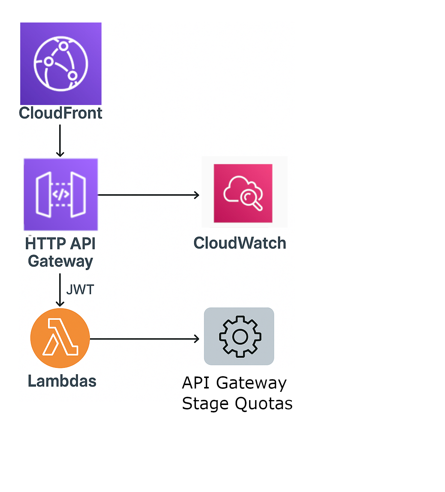

Backend Neuauflage
Hochsichere, kostenoptimierte Serverless API mit AWS API Gateway und Lambda
Projektziele
- Bestehende Java REST API abzuloesen fur eine bessere Wartung
- Kostenoptimierung und verbesserte Sicherheit durch Authentifizierung
- Schutz vor Missbrauch/DDoS und Cloud Kostenfallen
Es wird durch CloudFront exposed/erreichbar gemacht und hat mehrere Funktionen: Es schützt die Lambda-HTTP-URLs, indem wir sie in dem Front-End Code anstelle der Lambda-HTTP-URLs den URL der API GW verwenden koennen, und ermöglicht die JWT-Authentifizierung von Lambdas/Routes. So dass alle andere Kliente, die die JWT Tokens nicht mitgeben mit den HTTP Requests einen 403 was dem Browesr besagt dass der User nicht befugt ist die HTPP-Anfrage zu senden.
(HTTP API Gateways sind günstiger, aber schwieriger umzusetzen. Ich habe das Gefühl, Amazon lenkt die Aufmerksamkeit mit seiner Dokumentation so, dass man sich für die REST-Variante entscheidet. Es gibt eine Vielzahl von Beispielen auf ihrem GitHub-Account für die teurere REST-Variante, aber sehr wenige für HTTP. Allerdings erfährt man abgesehen von der mühsameren Implementierung keine Nachteile gegenüber REST-Gateways, was die Verfügbarkeit von Features angeht.)
API Drosselung Durch CloudWatch erlangt man die Fähigkeit, auch ohne WAF (was wiederum teurer ist) gegen DDoS vorzugehen. Die meisten Dokumente von AWS beschäftigen sich, wenn es um DDoS geht, mit der Verfügbarkeit der Applikation. Was mir aber Sorgen bereitet, ist meine Cloud-Rechnung.
Je nach Anwendungsart ist es klüger, einen DDoS-Angriff auszusitzen und Kunden über den Ausfall zu informieren, als all die Verantwortung und die damit einhergehenden Kosten für Hochverfügbarkeit zu übernehmen. Wir können die Requests Per Second beobachten und mit Lambda-Funktionen entsprechend darauf reagieren, z.B. indem wir das CloudFront-Deployment in extremen Fällen deaktivieren. Außerdem können wir selbst mit API Gateway an Stages verbundene Quotas erstellen, bestehend aus zwei Begrenzungen: burstLimit und rateLimit. burstLimit besagt, wie viele Requests wir gleichzeitig bedienen können, und rateLimit fügt dazu eine zeitliche Komponente hinzu: wie viele Requests pro Sekunde erlaubt sind. (Lies die Code Kommentare für ein besseres Verständnis.)
Scaffolding/Theoretisches Beispiel:
const authorizer = new cdk.aws_apigatewayv2_authorizers.HttpIamAuthorizer();
const authorizer = new cdk.aws_apigatewayv2_authorizers.HttpIamAuthorizer();
//create an API gateway "hello-api-gw" with a usage plan and a key
const api = new cdk.aws_apigatewayv2.HttpApi(this, 'HttpApi',{
defaultAuthorizer: authorizer,
apiName: 'hello-api-gw',
corsPreflight: {
//add the CloudFront domain with: npx ts-node util/addApiCorsPolicy.ts
allowOrigins: [VITE_DEV_URL,VITE_URL],
allowMethods: [cdk.aws_apigatewayv2.CorsHttpMethod.GET, cdk.aws_apigatewayv2.CorsHttpMethod.POST, cdk.aws_apigatewayv2.CorsHttpMethod.PUT,cdk.aws_apigatewayv2.CorsHttpMethod.OPTIONS,cdk.aws_apigatewayv2.CorsHttpMethod.HEAD, cdk.aws_apigatewayv2.CorsHttpMethod.DELETE],
allowHeaders: [
"Authorization",
"Content-Type",
"X-Amz-Date",
"X-Amz-Security-Token",
"X-Amz-User-Agent"
],
allowCredentials: true,
maxAge: cdk.Duration.seconds(3000)
}
});
//specifying removalPolicy
api.applyRemovalPolicy(cdk.RemovalPolicy.DESTROY);
const jwtAuthorizer = new cdk.aws_apigatewayv2_authorizers.HttpJwtAuthorizer("JWTAuthorizer", `https://cognito-idp.${this.region}.amazonaws.com/${userPool.userPoolId}`, {
// A list of the intended recipients of the JWT. A valid JWT must provide an aud that matches at least one entry in this list.
jwtAudience: [userPoolClient.userPoolClientId],
identitySource: ['$request.header.Authorization'] }
);
const readObjects_httpIntegration = new cdk.aws_apigatewayv2_integrations.HttpLambdaIntegration('readObjects-lambda-integration', readObjects_fn);
api.addRoutes({
path: '/chapters',
methods: [cdk.aws_apigatewayv2.HttpMethod.GET, cdk.aws_apigatewayv2.HttpMethod.POST],
integration: readObjects_httpIntegration,
authorizer: jwtAuthorizer
});